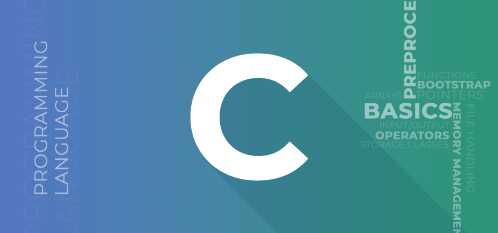
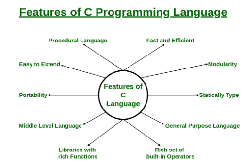

Let Start C
In this C Tutorial, you’ll learn all C programming basic to advanced concepts like variables, arrays,
pointers, strings, loops, etc. This C Programming Tutorial is designed for both beginners as well as
experienced professionals, who’re looking to learn and enhance their knowledge of the C programming
language.

What is C?
C is a general-purpose, procedural, high-level programming language used in the development of
computer software and applications, system programming, games, and more.
1. C language was developed by Dennis M. Ritchie at the Bell Telephone Laboratories in 1972.
2. It is a powerful and flexible language which was first developed for the programming of the
UNIX operating System.
3. C is one of the most widely used programming languages.
C programming language is known for its simplicity and efficiency. It is the best choice to start with
programming as it gives you a foundational understanding of programming.
The main features of the C language include:
1. General Purpose and portable
2. Low-level Memory Access
3. Fast speed and Clean Syntax
Why Should We Learn C?
Many later languages have borrowed syntax/features directly or indirectly from the C language. Like syntax
of java, PHP, JavaScript, and many other languages are mainly based on the C language. C++ is nearly a superset
of C language (Only a few programs may compile in C, but not in C++).
So, if a person learns C programming first, it will help him to learn any modern programming language as well.
As learning C help to understand a lot of the underlying architecture of the operating system.
Like pointers, working with memory locations, etc.
Difference Between C and C++
C++ was created to add the OOPs concept into C language so they both have very similar syntax
but both are a bit different from each other.Following are some main differences between C and C++
Programming language.
1.C++ supports OOPs paradigm while C only have procedural concept of programming.
2.C++ have exception handling capablities. In C, we have to resolve manually.
3.There are no references in C.
There are many more differences between C and C++ but these are sufficient at this point.
Features of C Programming Language
1.Procedural Language
2.Fast and Efficient
3.Modularity
4.Statically Type
5.General-Purpose Language
6.Rich set of built-in Operators
7.Libraries with Rich Functions
8.Middle-Level Language
9.Portability
10.Easy to Extend
